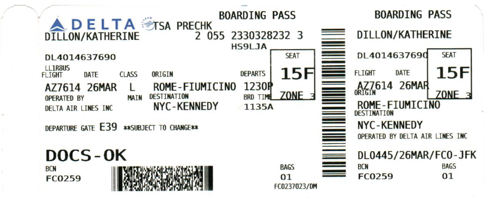
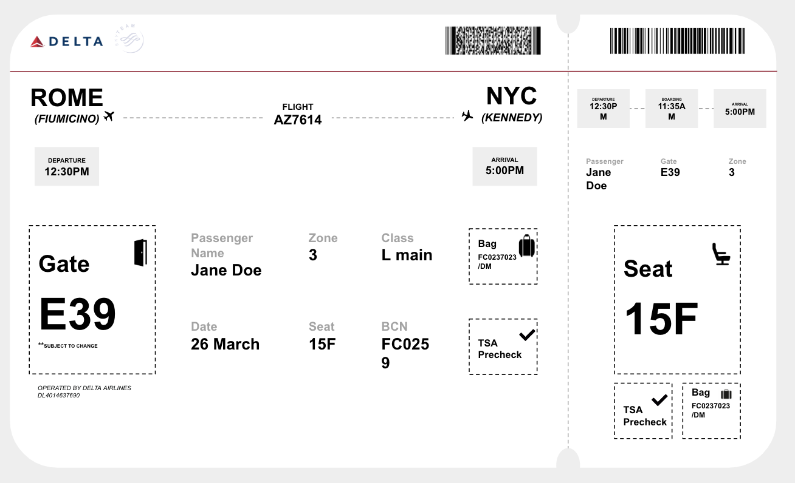

Graphic Design · UX/UI
Existing Ticket Design

This project applies graphic design principles and UX/UI best practices to redesign Delta's boarding pass, enhancing readability, hierarchy, and user experience.
New Ticket Design

Information Hierarchy – Adjusted type sizes, layout, and formatting to emphasize critical details like flight time, gate, and seat number.
Typography & Legibility – Selected clear, high-contrast fonts to improve quick readability, especially in high-stress airport environments.
Layout Optimization – Streamlined the visual structure to reduce clutter and enhance user flow.
Accessibility Considerations – Ensured that text is easily scannable, minimizing confusion for travelers.